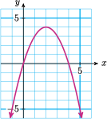
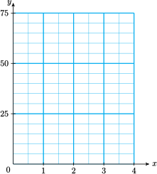

Section 6.4 Graphing Quadratic Equations
Subsection \(x\)-Intercepts of a Parabola
So far we have graphed quadratic equations by plotting points. But we can use some algebraic techniques to make the process easier.
In Lesson 6.2 we saw that the solutions of the equation
namely, \(p=0\) and \(p=40\text{,}\) are also the horizontal intercepts of the graph of
This is the same connection we saw between the \(x\)-intercepts of a line and the solutions of its equation. Recall that the \(x\)-intercept of the line \(y=mx+b\) is the point where the graph crosses the \(x\)-axis. To find the \(x\)-intercepts of a line, we set \(y=0\) and solve for \(x\text{.}\) The same strategy applies to quadratic equations.
\(x\)-Intercepts of a Parabola.
To find the \(x\)-intercepts of the graph of
we set \(y=0\) and solve the equation
Example 6.40.
- Find the intercepts of the graph of \(y=4x-x^2\text{.}\)
- Sketch the graph.
- We set \(y=0\) and solve the equation\begin{align*} 4x-x^2 \amp =0 \amp \amp \blert{\text{Factor the left side.}}\\ x(4-x) \amp =0 \amp \amp \blert{\text{Set each factor equal to 0.}}\\ x=0~~~~4-x \amp = 0 \amp \amp \blert{\text{Solve each equation.}}\\ x = 0~~~~x \amp = 4 \end{align*}The \(x\)-intercepts are the points \((0,0)\) and \((4,0)\text{.}\)
We make a table of values that includes the \(x\)-intercepts.
\(x\) \(-1\) \(0\) \(1\) \(2\) \(3\) \(4\) \(5\) \(y\) \(-5\) \(0\) \(3\) \(4\) \(3\) \(0\) \(-5\) We plot the points and connect them with a parabola, as shown in the figure.

Subsubsection Reading Questions
RQ 6.41.
How do we find the \(x\)-intercepts of the graph of \(y=ax^2+bx+c\text{?}\)
Set \(y=0\) and solve for \(x\text{.}\)
Subsection The Vertex
The graph of a quadratic equation \(y=ax^2+bx+c\) is a smooth curve, called a parabola, that bends upwards or downwards.
The Vertex.
The high or low point of a parabola is called its vertex.
Look again at the graph of \(y=4x-x^2\) from Example 6.40, shown at right. Notice that the graph is symmetric about a vertical line (called the axis of symmetry) that passes through the vertex. All the parabolas we'll study have a vertical axis of symmetry.
Look Closer.
Because of this symmetry, the \(x\)-intercepts are located at equal distances on either side of the axis of symmetry. Or we can say that the \(x\)-coordinate of the vertex is exactly halfway between the two \(x\)-intercepts.
We can locate the vertex of a parabola by taking the average of its \(x\)-intercepts.
Subsubsection Reading Questions
RQ 6.42.
What is the vertex of a parabola?
The high or low point
Example 6.43.
Find the vertex of the graph of \(y=4x-x^2.\)
In Example 1 we found that the \(x\)-intercepts of the graph are \(x=0\) and \(x=4\text{.}\) The \(x\)-coordinate of the vertex is the average of these two numbers.
The \(x\)-coordinate of the vertex is \(x=2\text{.}\) To find the \(y\)-coordinate of the vertex, we substitute \(x=\alert{2}\) into the equation of the parabola.
The coordinates of the vertex are \((2,4)\text{,}\) as you can see in the graph above.
The Vertex of a Parabola.
- The \(x\)-coordinate of the vertex is the average of the \(x\)-intercepts.
- To find the \(y\)-coordinate of the vertex, substitute its \(x\)-coordinate into the equation of the parabola.
Subsubsection Reading Questions
RQ 6.44.
How can we find the \(x\)-coordinate of the vertex of a parabola?
Take the average of its \(x\)-intercepts.
RQ 6.45.
How can we find the \(y\)-coordinate of the vertex of a parabola?
Substitute its \(x\)-coordinate into the equation of the parabola.
Subsection Graphing Parabolas
By locating the \(x\)-intercepts and the vertex of the graph, we can make a quick sketch of a parabola.
Example 6.46.
Sketch a graph of \(~y=x^2-8x+7\text{.}\)
First we find the \(x\)-intercepts: we substitute \(y=0\) into the equation, and solve for \(x\text{.}\)
The \(x\)-intercepts are the points \((7,0)\) and \((1,0)\text{.}\) Next, we locate the vertex of the graph. The \(x\)-coordinate of the vertex is the average of the \(x\)-intercepts, so
You can check that \(x=4\) is halfway between the two \(x\)-intercepts of the graph shown in the figure. To find the \(y\)-coordinate of the vertex, we evaluate the formula for the parabola at\(x=\alert{4}\text{.}\)
The vertex of the parabola is the point \((4,-9)\text{.}\) We can also find the \(y\)-intercept of the graph by substituting \(x=\alert{0}\) into the equation.
The \(y\)-intercept is the point \((0,7)\text{.}\) We plot the vertex and the intercepts and draw a smooth curve through them. The completed graph is shown at right.
Subsubsection Reading Questions
RQ 6.47.
How can we find the \(y\)-intercept of the graph of \(y=ax^2+bx+c\text{?}\)
Substitute \(x=\alert{0}\) into the equation.
By combining the techniques we studied in this Lesson, we write the following guidelines for sketching an accurate graph of a quadratic equation.
To Graph a Quadratic Equation.
- Find the \(x\)-intercepts: set \(y=0\) and solve for \(x\text{.}\)
- Find the vertex: the \(x\)-coordinate is the average of the \(x\)-intercepts. Find the \(y\)-coordinate by substituting the \(x\)-coordinate into the equation of the parabola.
- Find the \(y\)-intercept: set \(x=0\) and solve for \(y\text{.}\)
- Draw a parabola through the points. The graph is symmetric about a vertical line through the vertex.
Subsection Skills Warm-Up
Good work!
You've finished the Reading assignment for Section 6.4. Now try the Skills Warm-Up Exercises before the next class meeting.
Exercises Exercises
- Solve the equation.
- Write the equation in the form \(ax+b=0\text{.}\)
- Graph the equation \(y=ax+b\text{.}\)
- Find the \(x\)-intercept of your graph. Compare with your answer to part (a).
1.
\(2x+5=11\)
2.
\(2x-3=5x+9\)
3.
\(0.7x+0.2(100-x) = 0.3(100)\)

4.
\(4(7-x)=-2(6x-5)-6\)
Solutions Answers to Skills Warm-Up
- \(\displaystyle x=3\)
- \(\displaystyle x=-4\)
- \(\displaystyle x=20\)
- \(\displaystyle x=6\)
Subsection Lesson
Activity 6.9. Parabolas.
- Complete the table of values and graph each quadratic equation.
- Find the \(x\)-intercepts and the vertex of each graph.
-
\(\displaystyle y=x^2+4\)
\(x\) \(-3\) \(-2\) \(-1\) \(0\) \(1\) \(-2\) \(3\) \(y\) \(\hphantom{0000}\) \(\hphantom{0000}\) \(\hphantom{0000}\) \(\hphantom{0000}\) \(\hphantom{0000}\) \(\hphantom{0000}\) \(\hphantom{0000}\) 
-
\(\displaystyle y=x^2-4\)
\(x\) \(-3\) \(-2\) \(-1\) \(0\) \(1\) \(-2\) \(3\) \(y\) \(\hphantom{0000}\) \(\hphantom{0000}\) \(\hphantom{0000}\) \(\hphantom{0000}\) \(\hphantom{0000}\) \(\hphantom{0000}\) \(\hphantom{0000}\) 
-
\(\displaystyle y=4x-x^2\)
\(x\) \(-1\) \(0\) \(1\) \(2\) \(3\) \(4\) \(5\) \(y\) \(\hphantom{0000}\) \(\hphantom{0000}\) \(\hphantom{0000}\) \(\hphantom{0000}\) \(\hphantom{0000}\) \(\hphantom{0000}\) \(\hphantom{0000}\) 
-
\(\displaystyle y=(x-4)^2\)
\(x\) \(1\) \(2\) \(3\) \(4\) \(5\) \(6\) \(7\) \(y\) \(\hphantom{0000}\) \(\hphantom{0000}\) \(\hphantom{0000}\) \(\hphantom{0000}\) \(\hphantom{0000}\) \(\hphantom{0000}\) \(\hphantom{0000}\) 
Activity 6.10. Intercepts and Vertex.
-
Find the \(x\)-intercepts of the graph of
\begin{equation*} y=2x^2+8x \end{equation*} - Find the vertex of the graph.
- Find the \(y\)-intercept of the graph.
- Sketch the graph.

-
-
Find the \(x\)-intercepts of the graph of
\begin{equation*} y=2x^2+8x \end{equation*}Hint: Factor out \(-1\) from the quadratic trinomial first.
- Find the vertex of the graph.
- Find the \(y\)-intercept of the graph.
- Sketch the graph.

-
Subsubsection Wrap-Up
Objectives
In this Lesson we practiced the following skills:
- Finding the \(x\)-intercepts of a parabola
- Finding the vertex of a parabola
- Finding the \(y\)-intercept of a parabola
- Sketching the graph of a quadratic equation
Questions to answer before the Homework Preview.
Questions
- In Activity 1, Problems 1 and 2, how are the graphs different from the basic parabola?
- In Activity 2, Problem 2, how does the \(-1\) coefficient of \(x^2\) affect the graph?
- In Activity 2, Problem 2, does factoring from the equation affect the \(x\)-intercepts of the graph?
Subsection Homework Preview
Here are exercises to try before the end of the class meeting.
Exercises Exercises
- Find the \(x\)-intercepts of the graph.
- Find the \(y\)-intercept of the graph.
- Find the vertex of the graph.
1.
\(y=x^2-16\)
2.
\(y=2x^2+16\)
3.
\(y=x^2-10x+16\)
4.
\(y=16+6x-x^2\)
Solutions Answers to Homework Preview
- \(\displaystyle (4,0),~(-4,0)\)
- \(\displaystyle (0,-16)\)
- \(\displaystyle (0,-16)\)
- \(\displaystyle (-8,0),~(0,0)\)
- \(\displaystyle (0,0)\)
- \(\displaystyle (-4,-32)\)
- \(\displaystyle (2,0),~(8,0)\)
- \(\displaystyle (0,16)\)
- \(\displaystyle (5,-9)\)
- \(\displaystyle (-2,0),~(8,0)\)
- \(\displaystyle (0,16)\)
- \(\displaystyle (3.25)\)
Exercises Homework 6.4
For Problems 1–3, without graphing, find the \(x\)-intercepts of the graph of the equation.
1.
\(y=(x-3)(2x+5)\)
2.
\(y=2x^2-6x\)
3.
\(y=8x-3x^2\)
For Problems 4–5, find the intercepts and graph the two parabolas on the same grid.
4.
- \(\displaystyle y=x^2+1\)
- \(\displaystyle y=x^2-4\)
5.
- \(\displaystyle y=-x^2-3\)
- \(\displaystyle y=1-x^2\)

6.
- For each graph in Problems 4 and 5, give the coordinates of the vertex. Then use your answers to part (a) to help you answer the following questions. In these questions, \(k\) is a positive constant.
- What is the vertex of the graph of \(y=ax^2+k\text{?}\)
- What is the vertex of the graph of \(y=ax^2-k\text{?}\)
For Problems 7–8,
- Make a table of values and sketch the graph.
- What is the vertex of the graph?
7.
\(y=(x+2)^2\)
8.
\(y=(x-3)^2\)
For Problems 9–12,
- Find the \(x\)-intercepts and the \(y\)-intercept of the graph.
- Find the vertex of the graph.
- Sketch the graph.
9.
\(y=x^2+2x\)
10.
\(y=x^2-2x-3\)
11.
\(y=9-x^2\)
12.
\(y=-2x^2+12x-10\)
For Problems 13–14,
- Find the \(x\)- and \(y\)-intercepts of the parabola.
- Find the vertex of the parabola.
- Graph the pair of parabolas on the same grid and compare.
13.
- \(\displaystyle y=x^2-x-2\)
- \(\displaystyle y=-x^2+x+2\)
14.
- \(\displaystyle y=x^2-2x-15\)
- \(\displaystyle y=x^2+2x-15\)
15.
The bridge over the Rushing River at Marionville is 48 feet high. Francine stands on the bridge and tosses a rock into the air off the edge of the bridge. The height of the rock above the water \(t\) seconds later is given in feet by
-
Complete the table of values.
\(t\) \(0\) \(0.5\) \(1\) \(1.5\) \(2\) \(2.5\) \(3\) \(h\) \(\hphantom{0000}\) \(\hphantom{0000}\) \(\hphantom{0000}\) \(\hphantom{0000}\) \(\hphantom{0000}\) \(\hphantom{0000}\) \(\hphantom{0000}\) -
Sketch a graph of the equation on the grid.
 - Use the graph to estimate the height of the rock after 1.75 seconds. Verify your answer algebraically by substituting \(t=1.75\) into the equation for \(h\text{.}\)
16.
- Use your graph from Problem 15 to answer the question: When is the rock about 40 feet above the water?
- Write an equation that you could solve to answer the question in part (a).
17.
How long is the rock in Problem 15 more than 60 feet high?
18.
Refer to Problem 15.
- What is the highest point the rock reaches?
- After reaching its highest point, how long is the rock falling before it hits the water?